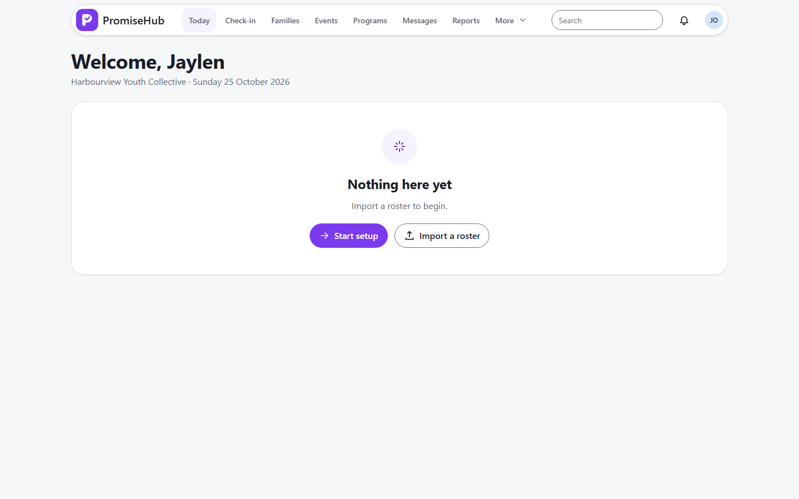
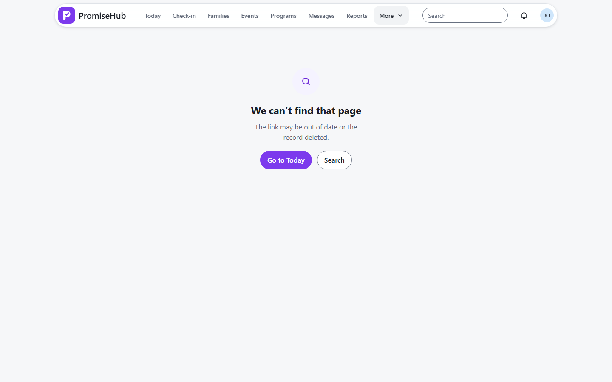

PromiseHub · Video 01
The walking skeleton
Tenancy, migrate and seed, audit recording and the shell
Tenancy, migrate and seed, audit recording and the shell
dotnet run --project backend/src/PromiseHub.Cli -- migrate dotnet run --project backend/src/PromiseHub.Cli -- seed dotnet run --project backend/src/PromiseHub.Cli -- migrate --check # exit 3 when pending
Standard plan · Jaylen, Marisol, Tom, Priya, Aisha · Rivera, Thompson, Tran
Free plan · Priya, Grace · its own Mateo Rivera
backend/src/PromiseHub.Api/Middleware/MigrationGuard.cs
TenantContextMiddleware resolves the membership from the sessionOrganizationId to every tenant-owned query| Request | Answer | Audit |
|---|---|---|
| Jaylen → Harbourview's Mateo | 200 | — |
| Jaylen → Northgate's Mateo | 404 | AccessDenied in Harbourview's log |
IAuditWriter joins the caller's unit of workAuditImmutableExceptionIncidents and Settings live in More, so the capsule never overflows.
Priya, signed in to Northgate, sees Northgate only.


API integration tests on in-memory SQLite, migrated and seeded by the CLI. Cross-tenant and audit cases included.
Playwright, Chromium, page objects, axe. A fake API answers every call; unrouted requests fail.
Next: staff sign in securely